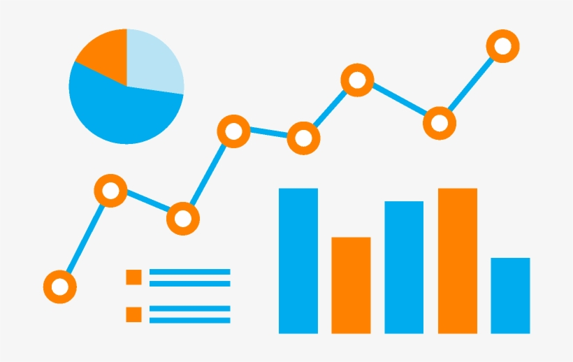
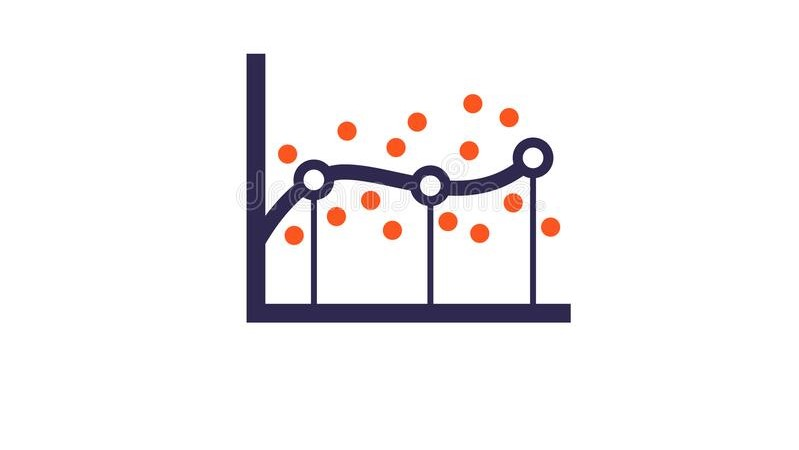
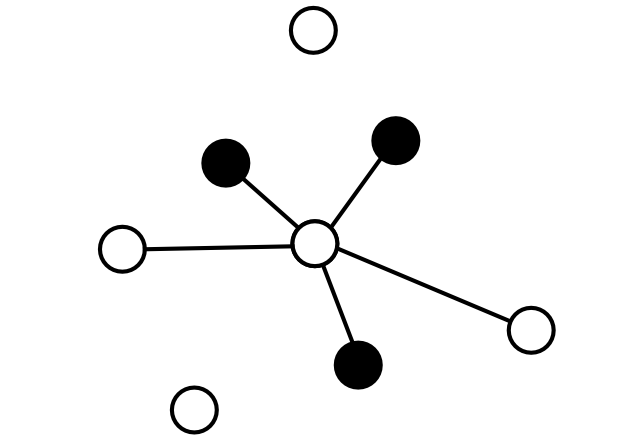

The studies were picked from Danny Ma's 8weeksSQLChallenge. These studies primarily focus on understanding analytics in real world. Through the case studies I answer some business analytical questions. Aim of this project was to get proficient with python libraries and EDA.
Python | Random Forest Classification

My first deep dive into complete data science flow was achieved through this project. I became familiar with concepts such as Feature Selection, Data Imputation, Supervised ML, Class Imbalance, etc.
Python | Linear Regression

The study focuses on exploring and understanding different variations of Regression - Univariate, Multivariate, Polynomial, addition of interactive terms. Additionally, I also utilise the OLS model and understand the various metrics associated with the output of the model.
Python | KNN Classification

The project's aim was to get a better understanding of K nearest neighbours algorithm. Algorithm is used to classify whether the spine of the corresponding patient is Normal/Abnormal.